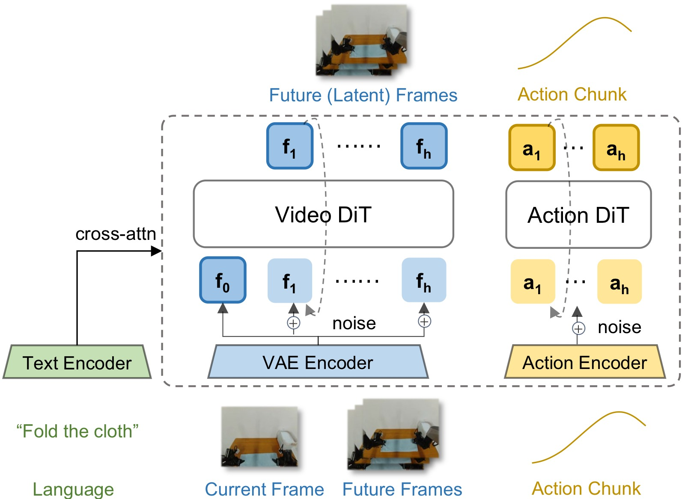
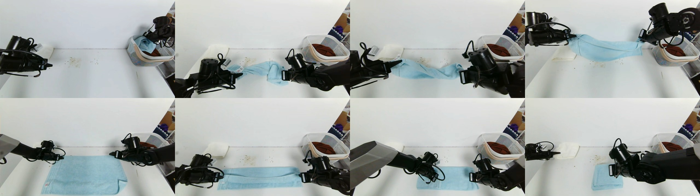
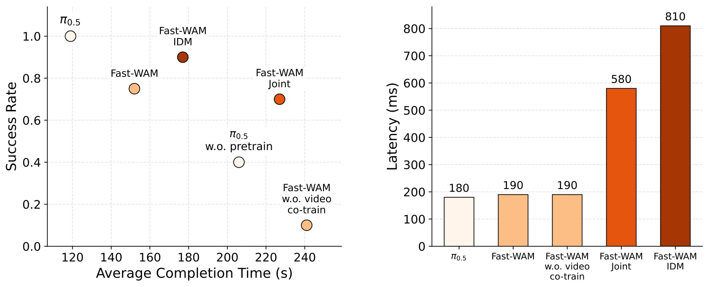

Fast-WAM: Do World Action Models Need Test-time Future Imagination?
论文信息 - 作者：Tianyuan Yuan, Zibin Dong, Yicheng Liu, Hang Zhao - 通讯作者：Hang Zhao（赵行） - 单位：IIIS, Tsinghua University（清华大学交叉信息研究院）& Galaxea AI - 投稿方向：NeurIPS 2026（main track） - arXiv ID：2603.16666 - 代码：https://github.com/yuantianyuan01/FastWAM（含 LIBERO/RoboTwin 训练和评估代码） - 项目主页：https://yuantianyuan01.github.io/FastWAM/ - 模型权重：https://huggingface.co/yuanty/fastwam
一、核心问题
World Action Models（WAM）通过同时建模未来视觉观测和动作预测，在具身控制中展现出了超越传统 Vision-Language-Action（VLA）模型的潜力。然而，几乎所有现有 WAM 都遵循 "想象再执行"（imagine-then-execute） 范式：先通过迭代视频去噪生成未来观测，再基于想象的未来预测动作。这带来了严重的测试时延迟问题（通常 >800ms），但从未有人系统研究过：显式的未来想象是否真的必要？
本文提出了一个根本性的问题：WAM 的收益究竟来自 (1) 训练时的视频建模目标（帮助学习更好的世界表征），还是来自 (2) 推理时的显式未来生成（提供额外的预见信息）？现有 WAM 将这两个因素耦合在一起，无法区分。
二、核心思路 / 方法
2.1 关键设计：解耦训练与推理
Fast-WAM 的核心思想是：训练时保留视频联合训练（video co-training），推理时跳过未来预测，直接从世界表征中生成动作。

图1：三种代表性 WAM 范式对比。
子图 (A) Joint-modeling WAM（联合建模）： 未来视频 token 和动作 token 在共享模型中被一起去噪。Action token 和 video token 通过共享注意力交互，动作生成与未来视频建模在整个去噪过程中耦合。代表工作：Motus、Unified World Models。
子图 (B) Causal WAM（因果式）： 先独立生成未来视频（第一阶段去噪），再将生成的未来表征作为条件输入给动作预测模块（第二阶段去噪）。动作预测以冻结的去噪视频为条件。代表工作：LingBot-VA、Vidar。
子图 (C) Fast-WAM（本文方法）： 训练时保留视频去噪和动作去噪两个分支（通过 Mixure-of-Transformer 架构共享注意力），但推理时完全移除未来视频分支。仅保留第一帧观测的干净 latent token，通过 video DiT 进行一次前向编码，产生世界表征 $z(o, l)$，然后仅对 action token 进行去噪生成动作。推理延迟从 810ms 降至 190ms。
2.2 架构：Mixture-of-Transformer (MoT)

图2：Fast-WAM 模型架构（左）与结构化注意力掩码（右）。
架构组件（图2 左）：
- Video VAE（冻结）： 将视觉观测编码为 latent token。多相机图像在输入 VAE 之前沿空间维度拼接为单张图像。时间维度进行 4× 下采样，结果 9 帧视频对应 $\sim$3 个 latent 时间步。
- T5 文本编码器（冻结）： 编码任务指令，通过 cross-attention 注入所有 token。
- Video DiT（Wan2.2-5B）： 世界建模骨干，30 层，hidden_dim=3072，24 头注意力，作为 MoT 的 "video expert"。
- Action DiT（1B）： 动作专家，30 层但 hidden_dim 缩减为 1024，作为 MoT 的 "action expert"。与 video DiT 共享注意力头数和每头维度，确保可以拼接做 mixed attention。
- Proprio 编码器： 可选的单层线性层，将本体感知状态投影到文本维度后拼接到 context 中。
注意力掩码（图2 右）：
训练时（Training Mask）的 token 分组和交互规则：
- Clean first-frame tokens（C）： 不 attend 任何其他 token（防止未来信息泄漏），仅作为视觉锚点被其他 token attend
- Noisy future video tokens（N）： 双向 attend 视频内所有 token，可访问 clean first-frame tokens，不可访问 action tokens
- Action tokens（A）： 双向 attend action 内所有 token，可访问 clean first-frame tokens，不可访问未来视频 token（关键设计——防止动作分支窥探未来）
推理时（Inference Mask）：未来视频分支完全移除，仅保留 clean first-frame tokens。Action tokens 仅 attend 自己和 first-frame tokens。
2.3 受控变体设计
为了回答核心问题，作者在同一框架下实现了三种受控变体：
| 变体 | 训练 | 推理 | 映射到现有工作 |
|---|---|---|---|
| Fast-WAM | 视频 + 动作联合训练 | 仅动作去噪（first-frame 编码） | 本文提出 |
| Fast-WAM-Joint | 视频 + 动作联合训练，action 可 attend 全部 video tokens | 视频 + 动作联合去噪 | Motus 等 |
| Fast-WAM-IDM | 视频 + 动作联合训练，teacher-forcing（50% 概率对 cond-video 加噪） | 先视频去噪，再基于冻结视频做动作去噪 | LingBot-VA 等 |
| Fast-WAM w.o. video co-train | 仅动作训练（架构不变，去掉 $\mathcal{L}_{\text{vid}}$） | 仅动作去噪 | 消融对照 |
三、训练目标
Fast-WAM 使用 Flow Matching 目标联合训练动作和视频分支。
3.1 Flow Matching 公式
给定目标变量 $y$（动作 chunk 或未来视频 latent），从高斯噪声 $\epsilon \sim \mathcal{N}(0, I)$ 和时间步 $t \in (0,1)$ 构造插值样本：
模型预测速度场（velocity field）：
3.2 联合目标
- 动作损失： $\mathcal{L}_{\text{act}} = \mathcal{L}_{\text{FM}}(a_{1:H})$，其中 $H=32$ 为动作 chunk 长度
- 视频损失： $\mathcal{L}_{\text{vid}} = \mathcal{L}_{\text{FM}}(z_{1:T})$，其中 $z_{1:T}$ 为 VAE 编码的未来帧 latent（每 chunk 9 帧）
- 总损失： $\mathcal{L} = \mathcal{L}_{\text{act}} + \lambda \mathcal{L}_{\text{vid}}$
3.3 训练细节
- 骨干：Wan2.2-5B video DiT（30 层，hidden_dim=3072，24 头，attn_head_dim=128）
- Action expert：相同架构但 hidden_dim=1024（1B 参数），总模型 6B
- 优化器：AdamW，lr=1e-4，weight decay=0.01，cosine annealing
- 推理：10 步去噪，CFG scale=1.0（实际不使用 CFG）
- 噪声调度：logit-normal 分布（遵循 Wan2.2）
- 延迟测量：单张 NVIDIA RTX 5090D V2 32GB
四、实验与结果
4.1 仿真基准：LIBERO 和 RoboTwin
LIBERO 结果（4 个 suite，40 个任务，2000 次评估试验）：
| 方法 | Embodied PT. | Spatial | Object | Goal | Long | Average |
|---|---|---|---|---|---|---|
| OpenVLA | ✓ | 84.7 | 88.4 | 79.2 | 53.7 | 76.5 |
| π₀ | ✓ | 96.8 | 98.8 | 95.8 | 85.2 | 94.1 |
| π₀.₅ | ✓ | 98.8 | 98.2 | 98.0 | 92.4 | 96.9 |
| LingBot-VA | ✓ | 98.5 | 99.6 | 97.2 | 98.5 | 98.5 |
| Motus | ✓ | 96.8 | 99.8 | 96.6 | 97.6 | 97.7 |
| Fast-WAM | ✗ | 98.2 | 100.0 | 97.0 | 95.2 | 97.6 |
| Fast-WAM-Joint | ✗ | 99.6 | 99.4 | 98.2 | 96.8 | 98.5 |
| Fast-WAM-IDM | ✗ | 98.8 | 97.8 | 97.8 | 97.6 | 98.0 |
| Fast-WAM w.o. co-train | ✗ | 89.2 | 99.2 | 95.4 | 90.0 | 93.5 |
关键发现：
- Fast-WAM（97.6%）在无 embodied pretraining 条件下与预训练的 Motus（97.7%）持平，显著优于同为无预训练的 WAM 基线
- Fast-WAM vs Fast-WAM-Joint（98.5%）差距仅 0.9 个百分点，说明跳过推理时未来想象的成本很小
- 去掉 video co-training 后掉到 93.5%（-4.1pp），尤其在 Spatial（-9pp）和 Long（-5.2pp）子集上退化严重
RoboTwin 结果（50+ 双手机器人任务，100 次试验/任务）：
| 方法 | Embodied PT. | Clean | Rand. | Average |
|---|---|---|---|---|
| π₀ | ✓ | 65.92 | 58.40 | 62.2 |
| π₀.₅ | ✓ | 82.74 | 76.76 | 79.8 |
| Motus | ✓ | 88.66 | 87.02 | 87.8 |
| Motus (from WAN2.2) | ✗ | 77.56 | 77.00 | 77.3 |
| LingBot-VA | ✓ | 92.90 | 91.50 | 92.2 |
| LingBot-VA (from WAN2.2) | ✗ | 80.60 | -- | 80.6 |
| Fast-WAM | ✗ | 91.88 | 91.78 | 91.8 |
| Fast-WAM-Joint | ✗ | 90.84 | 90.32 | 90.6 |
| Fast-WAM-IDM | ✗ | 91.16 | 91.34 | 91.3 |
| Fast-WAM w.o. co-train | ✗ | 82.76 | 84.80 | 83.8 |
关键发现：
- Fast-WAM（91.8%）大幅超越同无预训练的 Motus（77.3%）和 LingBot-VA（80.6%），并接近预训练的 LingBot-VA（92.2%）
- 三个有 video co-training 的变体性能高度接近（90.6%~91.8%），差距在 1.2pp 以内
- 去掉 video co-training 导致 8pp 的大幅下降（91.8% → 83.8%）
4.2 真机实验：毛巾折叠

图3：真机毛巾折叠任务（Galaxea R1 Lite 平台）。任务要求双臂协调操作柔性物体（毛巾），需要长期规划（长 horizon）和精确的闭环操控。演示数据量：60 小时遥操作数据。
真机结果：

图4：真机实验结果，左图为成功率 vs 平均完成时间散点图（越靠左上越好），右图为推理延迟对比。
左图解读（成功率 vs 完成时间）：
- 预训练的 π₀.₅ 表现最优（成功率最高 + 完成时间最短），这符合预期——它有大规模式 embodied 预训练数据
- 在 Fast-WAM 家族中，Fast-WAM-IDM 成功率最高（约 55%），但 Fast-WAM 完成时间更短（约 35s vs 约 45s），说明去掉了未来生成后执行效率更高
- 去掉 video co-training 的变体成功率骤降至仅 10%，且完成时间最长。这一退化幅度远超三个有 co-training 变体之间的差异
- 所有带 video co-training 的 Fast-WAM 变体均大幅优于无预训练的 π₀.₅，验证了 WAM 式视频联合训练在数据效率上的优势
右图解读（推理延迟）：
- Fast-WAM：190ms（实时级别，>20Hz）
- Fast-WAM-Joint：约 410ms（联合去噪，需同时维护 video+action 两组 token）
- Fast-WAM-IDM：810ms（两阶段推理：先视频去噪再动作去噪）
- Fast-WAM 比 imagine-then-execute 变体快 4×+，是实现真机实时部署的关键优势
4.3 核心结论
三组实验（LIBERO、RoboTwin、真机）一致表明：去掉 video co-training 导致的性能退化远大于在推理时跳过未来想象。WAM 的主要价值在于训练时通过视频预测目标塑造更好的世界表征，而非推理时的显式未来生成。
五、关键洞察与技术亮点
-
"预训练"来自视频模型而非具身数据： Fast-WAM 无需任何 embodied pretraining 即达到 SOTA 水平。其世界建模能力继承自 Wan2.2-5B 的视频生成预训练权重，通过 video co-training 将这些知识迁移到具身控制任务。
-
Structured Attention Mask 是关键设计： 通过精确控制 token 间的注意力流（action token 不能看未来 video token，clean first-frame 不 attend 任何 token），确保动作分支确实在"预测"而非"窥探"，同时让两个分支共享视觉锚点。
-
KV-Cache 推理优化： Fast-WAM 推理时使用
prefill_video_cache将 first-frame 的 video DiT 编码结果缓存为逐层 K/V，action 去噪的每一步只需计算 action token 的 attention（以缓存 video K/V 为条件），避免重复编码视频。 -
Flow Matching 统一框架： Action 和 video 使用相同的 flow matching 公式和 logit-normal 噪声调度，简化了实现和超参调优。
-
Action Chunk = 32 的设计： 每 32 步 action 对应 9 帧视频（4× 时间下采样后），action 维度与 video 时间维度对齐，确保时间一致性。
六、代码实现解读
6.1 整体架构数据流
┌─────────────────────────────────┐
│ FastWAM (6B total) │
│ │
Observation ──────────►│ Video VAE (frozen) │
(multi-cam) │ ├─ encode → video latents │
│ └─ first-frame latents ─────────┼──► prefill_video_cache()
│ │ │
Language ─────────────►│ T5 Encoder (frozen) │ │
Instruction │ └─ text embeddings ─────────────┼── cross-attn ──┐
│ │ │ │
│ ┌───────────────────────────────┘ │ │
│ │ Video DiT (30 layers, dim=3072) │ │
│ │ └─ pre_dit() → tokens + freqs │ │
│ │ ▼ │
│ │ ┌─────────────────────────────────┐ │
│ │ │ MoT (30 layers) │ │
│ │ │ ┌───────────┬───────────────┐ │ │
│ │ │ │Layer i: │ │ │ │
│ │ │ │ Q/K/V_cat │ Mixed Attn │ │ │
│ │ ───────► │ │ [video+ │ (structured │ │ │
│ │ │ │ action] │ mask) │ │ │
│ └─ kv_cache │ │ ──► split → post_block │ │ │
│ │ └───────────┴───────────────┘ │ │
│ └─────────────────────────────────┘ │
│ │ │
Action Chunk (H=32) ──►│ Action DiT (30 layers, dim=1024) │
│ ├─ pre_dit() → action tokens + freqs │
│ └─ post_dit() ← action_tokens ─────────────────────┘
│
│ Training only (┅┅┅):
│ ┌─ Video denoising loss (future frames)
│ └─ Action denoising loss (Flow Matching)
└─────────────────────────────────┘
6.2 关键代码文件映射
| 论文概念 | 代码位置 | 说明 |
|---|---|---|
| Fast-WAM 主模型 | src/fastwam/models/wan22/fastwam.py |
FastWAM 类，包含训练/推理全流程 |
| MoT 混合注意力 | src/fastwam/models/wan22/mot.py |
MoT 类，实现逐层 video+action 混合注意力 |
| Action DiT | src/fastwam/models/wan22/action_dit.py |
ActionDiT 类，1B 动作专家 |
| Fast-WAM-Joint | src/fastwam/models/wan22/fastwam_joint.py |
Joint modeling 变体（action attend 全部 video） |
| Fast-WAM-IDM | src/fastwam/models/wan22/fastwam_idm.py |
IDM 变体（teacher-forcing + 两阶段推理） |
| Video DiT | src/fastwam/models/wan22/wan_video_dit.py |
Wan2.2 DiT 骨干 |
| 训练器 | src/fastwam/trainer.py |
训练循环、DeepSpeed 集成 |
| 数据处理 | src/fastwam/datasets/lerobot/ |
LeRobot 格式数据集加载和预处理 |
| 模型配置 | configs/model/fastwam.yaml |
模型超参、scheduler、loss 权重 |
| 运行时工厂 | src/fastwam/runtime.py |
create_fastwam() 从配置构建模型 |
6.3 训练流程（FastWAM.training_loss）
training_loss(sample)
│
├─ build_inputs(sample)
│ ├─ VAE.encode(video) → input_latents [B, C, T_latent, H_lat, W_lat]
│ ├─ extract first_frame_latents (if fuse_vae)
│ ├─ T5 context + optional proprio encoding
│ └─ action + action_is_pad
│
├─ Video branch:
│ ├─ sample noise_video, timestep_video
│ ├─ add_noise(input_latents) → noisy_latents
│ ├─ replace first frame with clean latents
│ └─ target_video = scheduler.training_target(input_latents, noise)
│
├─ Action branch:
│ ├─ sample noise_action, timestep_action
│ ├─ add_noise(action) → noisy_action
│ └─ target_action = scheduler.training_target(action, noise)
│
├─ pre_dit (video + action):
│ ├─ video_expert.pre_dit(noisy_latents) → tokens, freqs, t_mod, context
│ └─ action_expert.pre_dit(noisy_action) → tokens, freqs, t_mod, context
│
├─ MoT forward (30 layers):
│ for each layer:
│ build Q/K/V per expert → concat → mixed_attention(structured_mask)
│ → split → post_block (self-attn + cross-attn + MLP) per expert
│
├─ post_dit:
│ ├─ video_expert.post_dit(tokens_out["video"]) → pred_video
│ └─ action_expert.post_dit(tokens_out["action"]) → pred_action
│
└─ Loss:
├─ loss_video = MSE(pred_video, target_video) [masked by image_is_pad]
├─ loss_action = MSE(pred_action, target_action) [masked by action_is_pad]
└─ loss_total = λ_video * loss_video + λ_action * loss_action
6.4 推理流程（FastWAM.infer_action —— 核心 Fast Path）
infer_action(obs_image, instruction)
│
├─ VAE.encode(first_frame) → first_frame_latents
├─ random init → latents_action [1, 32, action_dim]
│
├─ video_expert.pre_dit(first_frame_latents, t=0)
│ └─ 返回 video tokens + freqs + t_mod + context
│
├─ mot.prefill_video_cache(video_tokens, ...)
│ └─ 逐层计算 video K/V，存入 kv_cache (30 层)
│ for each layer:
│ Q_video, K_video, V_video = build(video_tokens)
│ mixed = flash_attention(Q_video, K_video, V_video, self_mask)
│ video_tokens = post_block(video_tokens, mixed)
│ kv_cache[layer] = {k: K_video, v: V_video}
│
├─ Denoising loop (10 steps):
│ for each step:
│ timestep_action = schedule[t]
│ action_pre = action_expert.pre_dit(latents_action, t)
│ └─ 返回 action tokens + freqs + t_mod
│
│ mot.forward_action_with_video_cache(
│ action_tokens, kv_cache, joint_attention_mask
│ )
│ └─ for each layer:
│ Q_act, K_act, V_act = build(action_tokens)
│ K_cat = concat([kv_cache[layer].k, K_act])
│ V_cat = concat([kv_cache[layer].v, V_act])
│ mixed = flash_attention(Q_act, K_cat, V_cat, action_rows_of_joint_mask)
│ action_tokens = post_block(action_tokens, mixed)
│
│ pred_action = action_expert.post_dit(action_tokens)
│ latents_action = scheduler.step(pred_action, delta, latents_action)
│
└─ return latents_action → action chunk (32 steps)
6.5 Structured Attention Mask 实现
# fastwam.py:_build_mot_attention_mask()
def _build_mot_attention_mask(video_seq_len, action_seq_len, video_tokens_per_frame):
mask = zeros(total_seq, total_seq) # 全零 = 不可见
# video → video: 由 video_expert 的配置决定
# "first_frame_causal" 模式: first-frame 双向，后续帧因果
mask[:video_seq_len, :video_seq_len] = video_mask
# action → action: 双向（action chunk 内部完全可见）
mask[video_seq_len:, video_seq_len:] = True
# action → first-frame video: 可访问视觉锚点
mask[video_seq_len:, :video_tokens_per_frame] = True
# action → future video: 不可见！（关键解耦设计）
# 这一行被刻意留为 False
return mask
Fast-WAM-Joint 的关键区别：mask[video_seq_len:, :video_seq_len] = True —— action 可访问全部 video token（包括未来帧），形成联合建模。
6.6 Teacher-Forcing in Fast-WAM-IDM
Fast-WAM-IDM 训练时引入了第三个分支（cond-video），以 50% 概率对其加噪：
training_loss (IDM variant):
├─ Branch A: noisy video → video denoising loss
├─ Branch B: noisy action → action denoising loss
├─ Branch C: cond video (50% noisy / 50% clean)
│
├─ 拼接 [noisy_video, cond_video] 作为 video expert 输入
├─ Action 仅 attend cond_video（不 attend noisy_video）
└─ 推理时两阶段：先去噪 video → 冻结 cond → 去噪 action
七、局限性
- 仅研究单步 action chunk： 论文为简化控制实验，省略了外层的自回归 rollout 循环。真实部署中需要滑动窗口式的 chunk 执行，外层 rollout 的影响未被研究。
- 未探索更大规模预训练： Fast-WAM 使用 Wan2.2-5B 作为骨干，未测试更大视频模型（如 Wan2.2-14B）或更多预训练数据下的 scaling 行为。
- 单任务毛巾折叠的真机实验范围有限： 真机仅测试了一个任务（毛巾折叠），虽然该任务有代表性（长 horizon + 柔性物体），但更多样化的真机任务（如灵巧操作、移动操作）的验证仍缺乏。
- Flow Matching 与 action 的兼容性未深入探讨： Action 是低维连续向量（通常 <20 维），与高维视频 latent（48 通道 × 空间 × 时间）在 flow matching 中的行为差异未被分析，可能存在更适合 action 的替代训练目标。
八、关键概念速查
| 概念 | 说明 |
|---|---|
| WAM (World Action Model) | 同时建模未来视觉观测和动作生成的具身策略模型 |
| VLA (Vision-Language-Action) | 直接从视觉+语言映射到动作的策略模型，不显式建模未来 |
| Imagine-then-Execute | 先想象未来 → 再基于想象执行动作的 WAM 推理范式 |
| Video Co-training | 训练时额外的视频预测/去噪目标，作为动作学习的辅助信号 |
| MoT (Mixture-of-Transformer) | 多个专家 DiT 共享混合注意力的架构 |
| Flow Matching | 通过预测速度场从噪声到数据的生成模型训练方法，替代 DDPM |
| Logit-normal Schedule | Wan2.2 使用的噪声调度策略，从 logit-normal 分布采样时间步 t |
| KV-Cache | 推理时将视频编码的逐层 K/V 缓存，供 action 去噪多步复用 |
| Teacher Forcing | IDM 变体中：训练时以一定概率对 cond-video 加噪，使 action 分支学会利用不同质量的视频条件 |
| LIBERO | 机器人操作仿真基准，含 4 个 suite（Spatial/Object/Goal/Long）共 40 个任务 |
| RoboTwin 2.0 | 双臂协调操作仿真基准，50+ 任务，含 clean 和 randomized 两种场景 |